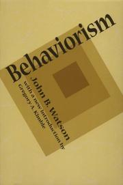

Behaviorism
Book·John B. Watson, 1924·行为主义

Watson's popular account of behaviorism, including the extreme environmental determinism that was later criticized.
- Author
- John B. Watson
- Year
- 1924
- Difficulty
- Intermediate
- Kind
- Primary text
- Schools
- Behaviorism
- Core theories
- Conditioned Emotional Response (Little Albert)
Editions
- Chinese edition 《行为主义》 [美] 约翰·布鲁德斯·华生 / 约翰·华生 · tr. 李维 · 北京大学出版社 · 2012 Douban 8.7 (128 ratings) Douban page ↗
- English edition Behaviorism John B. Watson · Transaction Publishers reprint of the 1930 revised edition · 1998 Open Library ↗